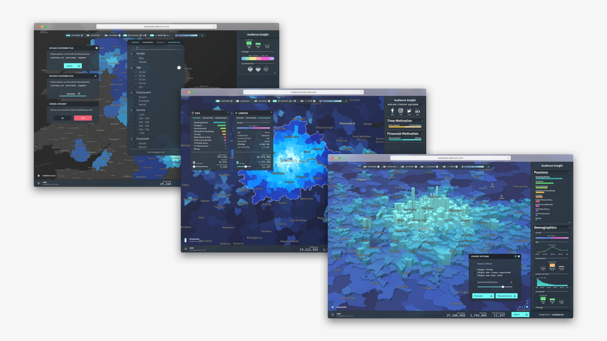
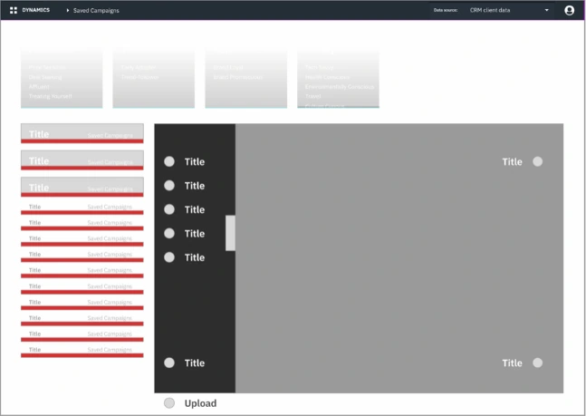
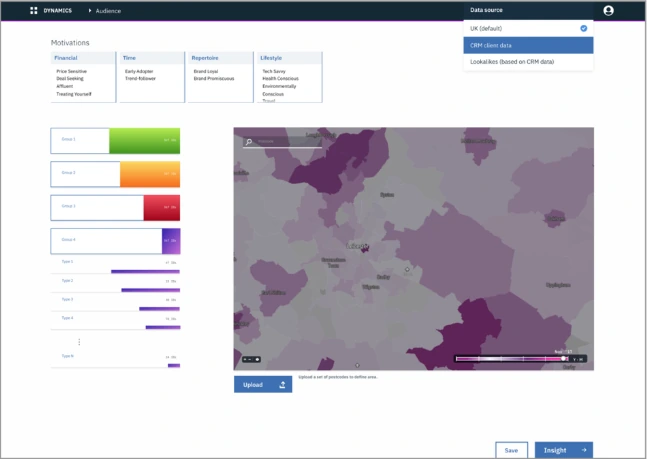
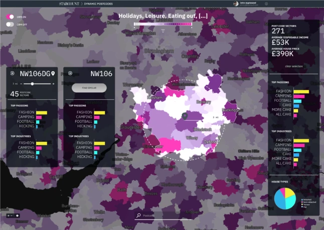
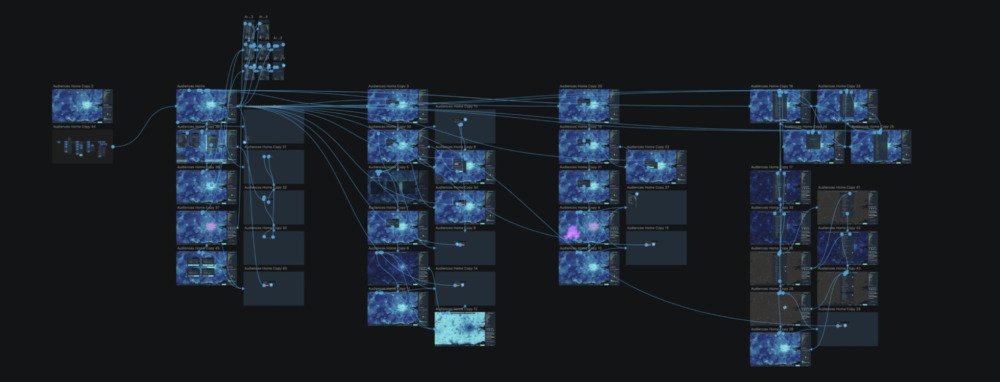
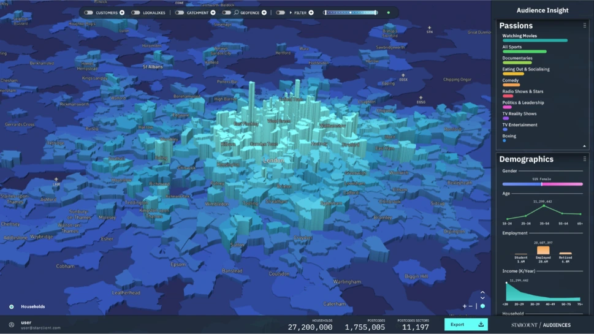
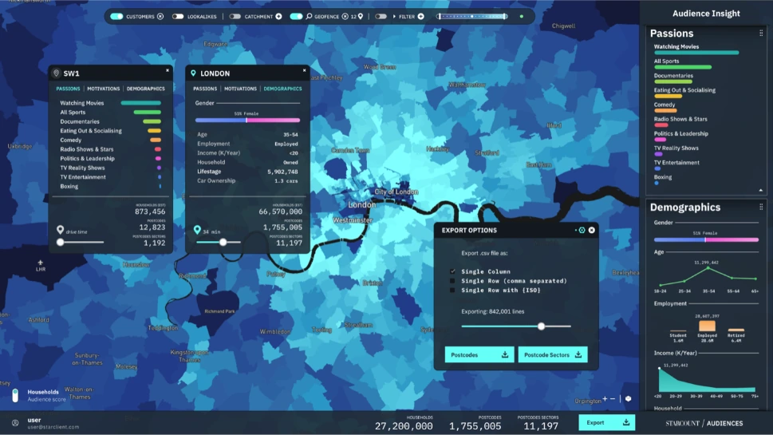
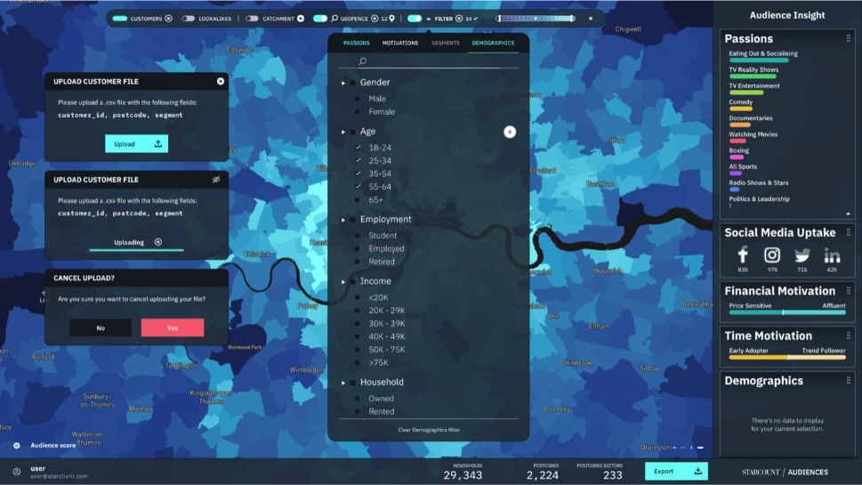
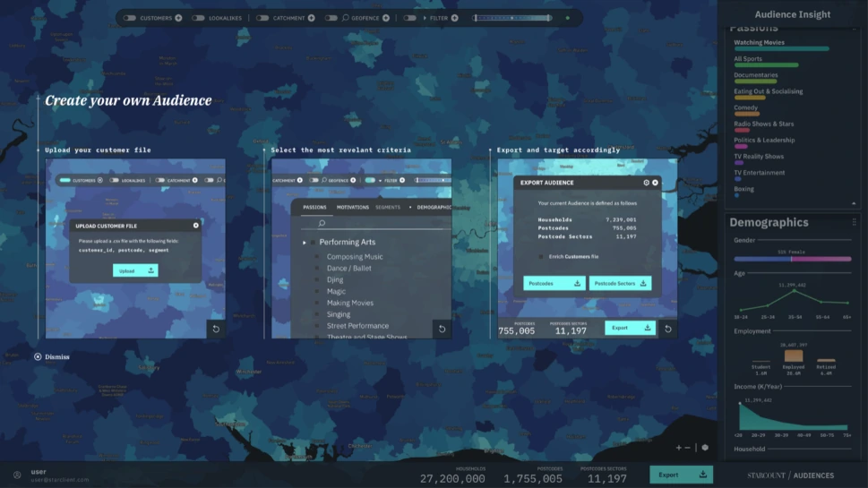

Audiences is a B2B platform that allows companies to define one or multiple target audiences based on “Passions” — which is how Starcount defines consumer buying interests — and create geo-fences relevant to those audiences. This allows the companies to advertise or adjust retail presence in these areas to maximise product fit. This was a project built from scratch, essentially trying to turn the available data, into a solution that would cater to our existing and potential clients.

From idea to product
Most projects are born out of a need, to which a solution is built. Audiences was built on a belief that the data we had, could be turned into a viable product. This required a different approach to design and ideating. The initial focus was on understating how we could use our data, to surface insights that other companies wouldn’t be able to. With that, we then had to think how to turn those insights into actionable features, that our clients would use, and understand how to wrap it all up as a value proposition that we could take to market.



Internal workshops
We did this by doing multiple workshops — first with key people in the company, who had either considerable knowledge regarding the data, or considerable knowledge about our clients (Sales/Support). This enabled the product team to flesh out a first draft of the offer, and what it could look like to share with actual clients, whose feedback further shaped the offer, and introduced new concepts that we could explore as product features to introduce later on.
Based on these sessions, we were able to get working on an MVP within a couple of weeks, and have it ready for another round of feedback within the month.

Validating our findings
After the initial feedback on our MVP, we ran a competitor analysis to identify key features we’d need to match, and more importantly, making sure clients adopting our offer wouldn’t have their workflows disrupted by a steep learning curve, or lack of functionality. We ran the internal workshops and client feedback sessions again to validate the new findings. Me and the team had to come up with clever ways to address all needs, with our limited time and resources, using our ingenuity to maximise the value of these initial releases, and start laying the foundation upon which we’d build iteratively.




Culture shift
This project marked a change in product culture within the company, and set the tone for future development. The pace at which we showed new iterations, and presented in an informed manner the areas that needed attention next, allowed a more organised process, as well as more reassured leadership and stakeholders alike. In the months after launch, work kept at a steady pace, improving and iterating the product in line with both our continuous internal testing and auditing, as well as user feedback that came either voluntarily or in organised periodic sessions.